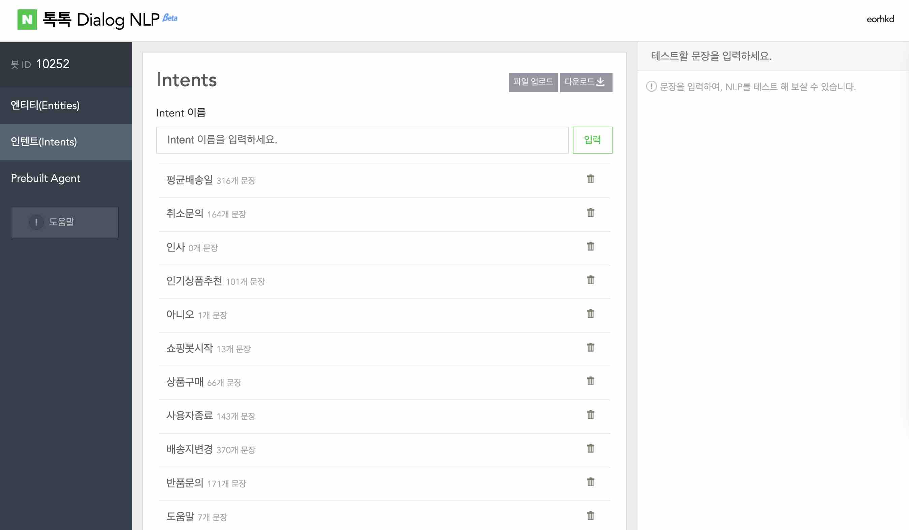
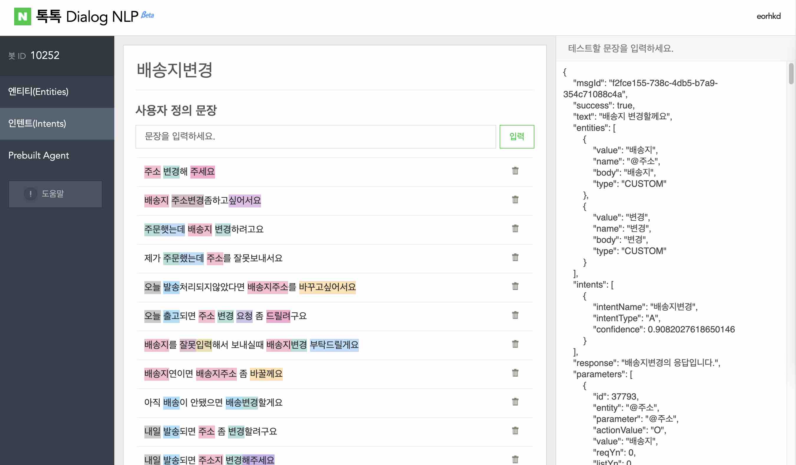

Dialog NLP is a natural language understanding platform used to
design and integrate a conversational user interface into web
applications and chatbot.


Samsung Knox Manage
Samsung SDS
Samsung Knox Manage is a cloud-based EMM solution. Knox manage
manages device features suitable to business purpose and is intended
to provide complete and full Knox feature support.
link